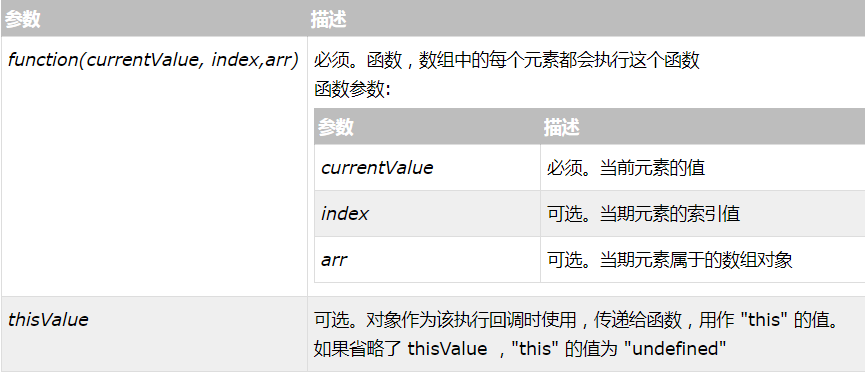
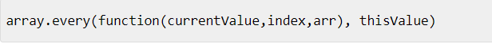
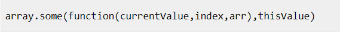
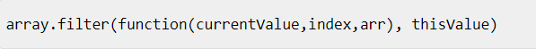
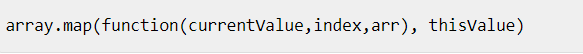
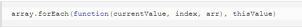

分享人：孙剑立
目录
1.背景介绍
2.知识剖析
3.常见问题
4.解决方案
5.编码实战
6.扩展思考
7.参考文献
8.更多讨论
使用JavaScript数组常常需要对数组进行遍历、迭代操作。而我们常用的就是for语句对数组进行迭代。然而在ECMAscript5已经为数组定义了5个迭代的方法，分别是：filter、some、map、foreach、every，下面我们讲讲它们的具体作用。
Firefox2+,safari3+,Opera9.5+

every()： 对数组中的每一项运行给定函数，如果该函数对每一项都返回true，则返回true ;

some()： 对数组中的每一项运行给定函数，如果该函数对任一项返回true，则返回true;

通过 demo，我们了解到对于 every() ，它返回的是false，因为存在不符合条件的值。
而对于some() ，结果就为true，因为至少存在一项符合条件的值；
filter()： 对数组中的每一项运行给定函数，返回该函数会返回true的项组成的数组。 
通过调用 filter() 创建并返回了包含符合条件的数组，因为传入的函数对他们每一项都返回true。这个方法对查询符合某些条件的所有数组项非常有用。
map()：对数组中的每一项运行给定函数，返回每次函数调用的结果组成的数组。

map()也返回一个数组，而这个数组的每一项都是在原始数组中的对应项上运行传入函数的结果；
forEach()：对数组中的每一项运行给定函数，这个方法并没有返回值 ;

通过demo可以看出 forEach() ，只是对每个数组项运行指定的函数体，这个迭代方式并没有返回值,本质上与使用for循环迭代数组一样；
迭代和遍历、循环、递归有什么区别？
循环（loop），指的是在满足条件的情况下，重复执行同一段代码。比如，while语句。
迭代（iterate），指的是按照某种顺序逐个访问列表中的每一项。比如，for语句。
遍历（traversal），指的是按照一定的规则访问树形结构中的每个节点，而且每个节点都只访问一次。
递归（recursion），指的是一个函数不断调用自身的行为。比如，以编程方式输出著名的斐波纳契数列。
有了以上定义，这几个概念之间的区别其实就比较清楚了。至于它们之间的联系，严格来讲，它们似乎都属于算法的范畴。
换句话说，它们只不过是解决问题的不同手段和方式，而本质上则都是计算机编程中达成特定目标的途径。
相对于for()，JS数组自定义的数组迭代方式有哪些好处？
答：在实现相同功能的前提下，后者除了能够节省代码量外，在实现某些功能上的流程中存在很多有意思的优势，比如forEach相比普通的for循环的优势在于对稀疏数组的处理，会跳过数组中的空位。for+i在性能测试上是优越于后者，但是前提是，array的length要事先计算出来，而在处理非常大量的数据时候，后者的优势就显而易见了。
JavaScript高级程序设计第三版
(详见P96,第五章引用类型中的5.2.8迭代方法)
W3Cschool JavaScript教程
你还能想到几种办法来应用以上几个数组迭代方式？
感谢大家的观看 BY : 孙剑立 | 郭俊伟